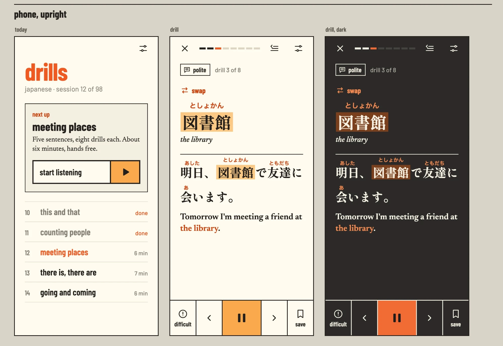
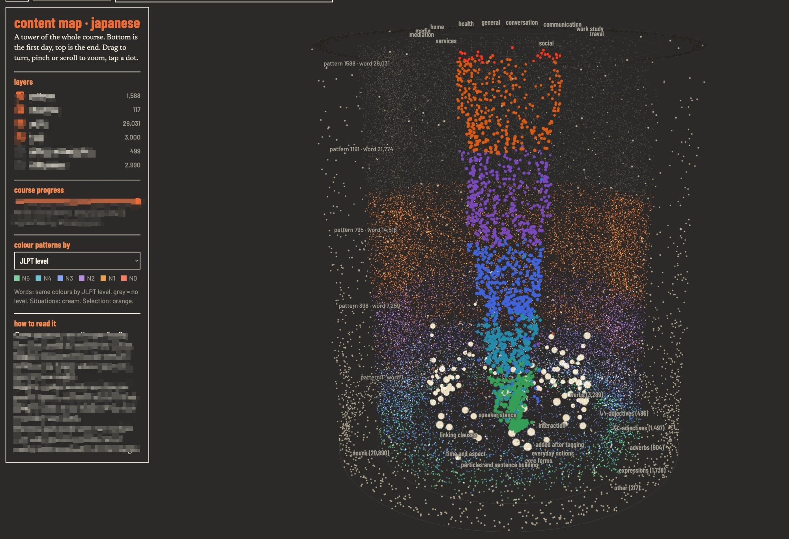

O projeto
Existem centenas de aplicativos de idiomas, e a maioria trata o aprendizado como um jogo: pontos, sequências de dias, exercícios soltos. Eles são bons para manter o hábito, mas raramente levam alguém a conversar, ler ou trabalhar no novo idioma. O Drills parte de outra pergunta: qual é o caminho mais curto entre não saber nada e conseguir se virar sozinho?
A ideia é de Fellipe Silva Martins e Carlos Eduardo Pereira. O aplicativo se usa de ouvido, em sessões de poucos minutos, e todo o conteúdo do curso é planejado e organizado com apoio de inteligência artificial.
Aprendizado sério
Um curso completo e planejado do primeiro ao último dia, feito para levar a pessoa ao uso real do idioma, e não para entreter.
Formato de bootcamp
Intensivo e direto ao ponto: dar ao aluno a maior independência possível no menor tempo possível.
Entender e falar
O foco está na compreensão e na produção do idioma, e não no estudo tradicional de regras de gramática.
Por que começar pelo japonês
De propósito, o primeiro curso é de japonês, um caso extremo para quem fala português: outra escrita, outra ordem das frases, quase nenhuma palavra em comum. Se o método funciona aí, a expectativa é que funcione ainda melhor em idiomas mais próximos. Os idiomas mais procurados entram depois.
O projeto conta com o apoio do Núcleo de Estudos sobre a China (NECH) do Mackenzie, que está ajudando a desenvolver a versão para o chinês mandarim.
Em que fase está
O Drills está na fase anterior ao produto mínimo viável (MVP). Ainda não há versão aberta ao público, e os detalhes de funcionamento ficam para quando o aplicativo estiver pronto para ser mostrado. No laboratório, o projeto se liga à área de inovação e à frente de desenvolvimento de ferramentas: é uma ideia que nasce na pesquisa e quer virar um produto.


Próximos passos
- Desenvolvimento
Construção do aplicativo e do conteúdo do primeiro curso.
- MVP
Uma primeira versão completa, enxuta, com o essencial para ser usada de verdade.
- Testes
Uso por um grupo de pessoas, para medir o que funciona e corrigir o que não funciona.
- Incubação
Candidatura a uma incubadora de empresas, possivelmente uma das incubadoras do Mackenzie.
- Financiamento
Busca de recursos para crescer. Uma possibilidade é o programa PIPE, da FAPESP, de apoio à pesquisa inovativa em pequenas empresas.
Estágio de inovação
Hoje o Drills está na fase 2: o protótipo funciona e o problema está sendo validado. A meta é chegar à fase 3, com o MVP pronto e os primeiros usuários reais, que é o ponto de partida para a incubadora e para o pedido de financiamento.
- 01Ideação e conceito
Encaixe entre problema e solução, proposta de valor inicial, primeira estimativa de mercado.
TRL 1–2 · IRL 1–2 - Hoje02Pré-seed e validação
Protótipos de baixa fidelidade, conversa com potenciais usuários, análise da concorrência.
TRL 3–4 · IRL 3–4 - Meta03Seed e MVP
Produto mínimo viável lançado, primeiros usuários e pilotos reais.
TRL 5–6 · IRL 5–6 - 04Crescimento inicial
Encaixe entre produto e mercado comprovado, modelo repetível, custos previsíveis.
TRL 7–8 · IRL 7–8 - 05Escala
Operação em grande volume, canais otimizados, expansão geográfica.
TRL 9 · IRL 9 - 06Maturidade
Posição consolidada no mercado, receitas previsíveis, governança corporativa.
Inovação contínua
Classificação pela Unified Concept-to-Market Innovation Taxonomy. TRL é o nível de maturidade da tecnologia e IRL, o nível de prontidão para investimento.